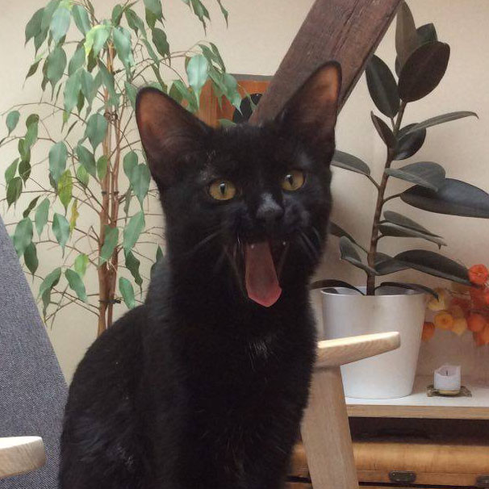
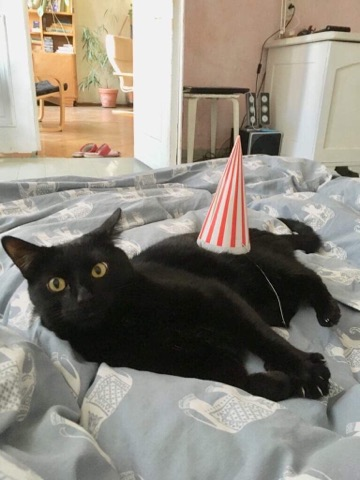
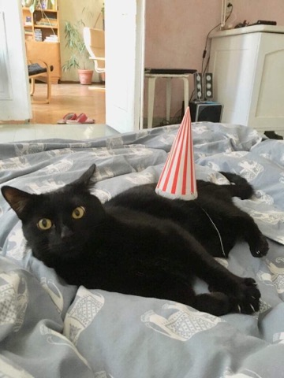
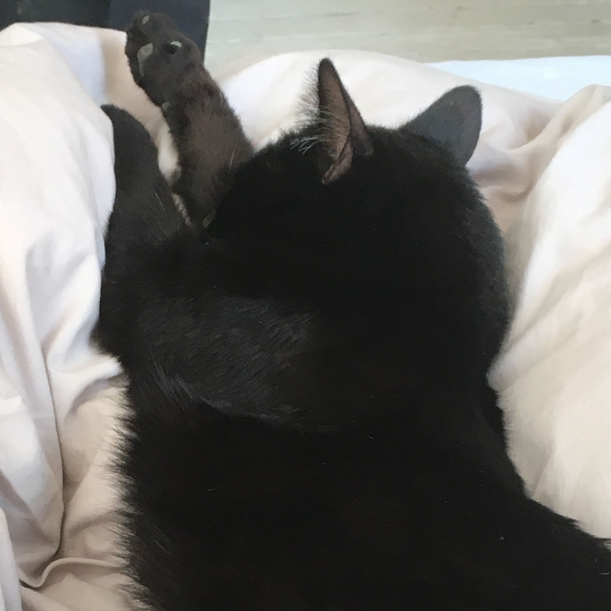
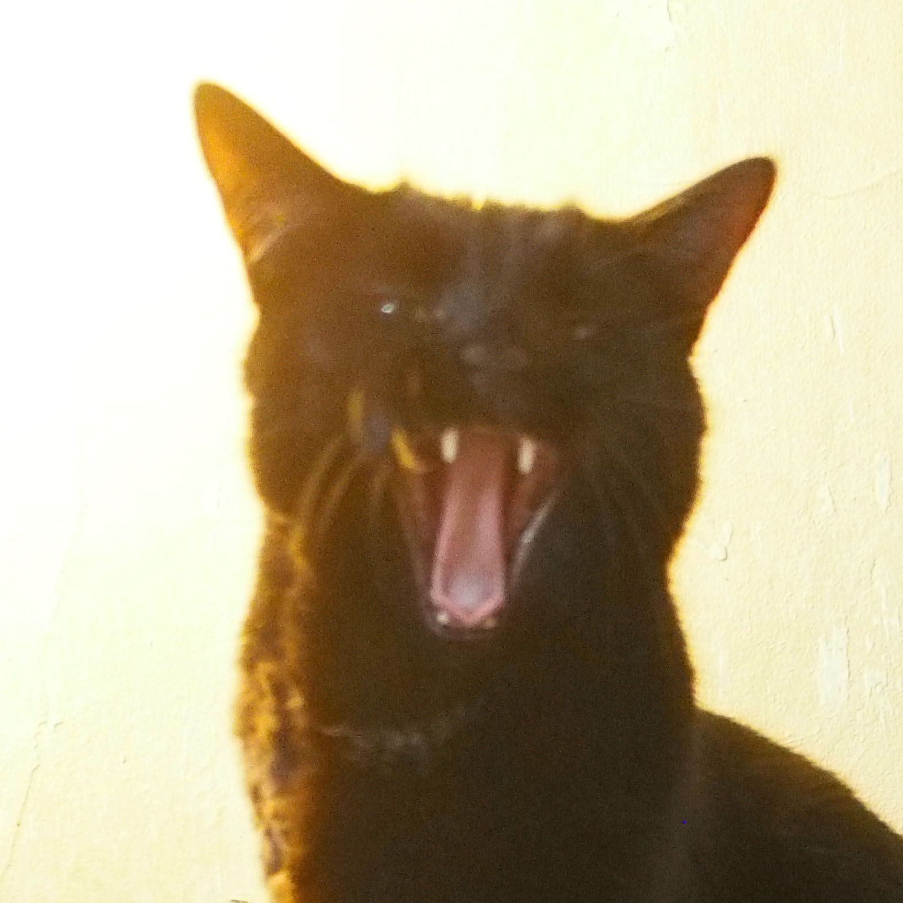

samtiņš
vēsture
Samtiņš tika paņemts no šīs patversmes. Šis ir apraksts, kurš bija ielikts pie viņa bildes: "Samtiņš no Salaspils. Samtiņš tika atrasts arī Maskavas ielā, tikai Salaspilī, kādas mājas kāpņu telpā. Labsirdīga sieviete nevarēja mazo kaķēnu atstāt vienu un uzņēma pie sevis mājās, kaut mājās ir kaķīši. Tagad Samtiņš ir paaudzies un ir gatavs doties mājās. Viņš ir vakcinēts, kastrēts, šobrīd ārstē austiņas. Samtiņam ir netikai samta kažociņš, bet arī samta raksturs - mīlīgs, maigs un draudzīgs."
bildes


 

par kaķīti
Šobrīd kaķītis ir 2.5 gadus vecs, solītais samtiņa raksturs gan kaut kur pazudis un kā jau kaķītis ar skarbu bērnību neatteiksies no jebkuras izdevības kaut ko nočiept no galda vai šķīvja. Oportūnists. Ļoti labprāt ķer mušas, guļ un skatās pa logu uz ielu. Ir paspējis salauzt ķepiņu, krītot no 3. stāva loga uz asfalta, ielecis Ziemassvētku eglītē un dabūjis skujas acīs, kā arī negausīgas ēšanas dēļ piedzīvojis kuņģa operāciju.

top 3 maltītes
- Konservi ar garšas pastiprinātāju un atkarību radošām vielām
- Jēla vistas gaļa
- Vārīti kartupeļi

labākie draugi
Samtiņš ir draudzīgs gan pret cilvēkiem, gan citiem kaķīšiem un sunīšiem:
- Līva
- Viktorija
- Rebīte (kaķenīte)
- Aļisa (suns)